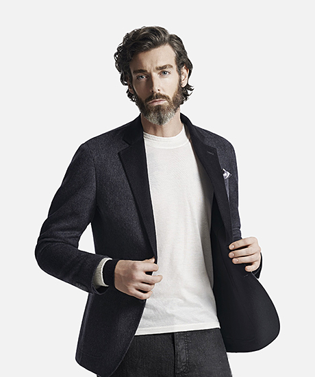

安藤忠雄 Tadao Ando
总经理
人物履历
- 1941年9月13日出生，出生于日本大阪。
- 1957年左右，开始练习职业拳击。
- 1959～1961年，考察日本传统建筑。
- 1962～1969年，游学于美国、欧洲和非洲。
- 1969年，创办“安藤忠雄建筑研究所”（Tadao Ando Architecture&Associates）。
- 1969年在大阪成立安藤忠雄建筑研究所，设计了许多个人住宅。其中位在大阪的“住吉的长屋（住吉の长屋）”获得很高的评价。
- 1980年代在关西周边（特别是神户?北野町、大阪心斋桥一带）设计了许多商业设施、寺庙、教会等。
- 1987年 - 担任耶鲁大学的客座教授。
- 1988年 - 担任哥伦比亚大学的客座教授。
- 1990年代之后公共建筑、美术馆，及海外的建筑设计案开始增加。
- 1989年 - 担任哈佛大学的客座教授。
- 1995年 - 获得普利兹克建筑奖。
- 1997年 - 执教于日本东京大学建筑系，并担任东京大学工学部教授。
- 1997年 - 2003年 - 从东京大学退休，转任名誉教授。
- 2005年 - 获得东京大学的终身特别荣誉教授。
- 2011年 - 担任东南大学的客座教授。